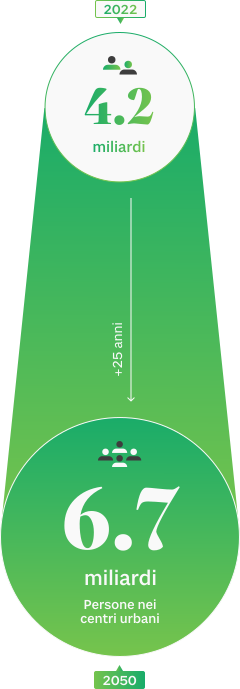
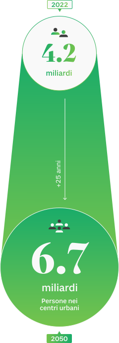

il verde urbano: protagonista nel futuro delle città
Le città stanno diventando sempre più centrali e importanti nella vita di molte persone. Saranno il campo principale dove giocheremo le sfide del futuro: la sostenibilità del nostro stile di vita, la lotta al cambiamento climatico, la ricerca del benessere individuale attraverso lo sviluppo e le innovazioni tecnologiche. Uno dei temi fondamentali, alla luce del secolare fenomeno di urbanizzazione, riguarda l’utilizzo dello spazio urbano, pubblico e privato.
È infatti cresciuta la consapevolezza su fenomeni come la dispersione e la rigenerazione urbana, il consumo del suolo, la mobilità sostenibile, l’accessibilità, la qualità dell’aria e dei servizi.
Le parole di Ban Ki-moon
Ex Segretario Generale dell’ONU
Le città sono il luogo in cui la battaglia per lo sviluppo sostenibile sarà vinta, o persa
Un elemento in particolare fa da sfondo alla ricerca di qualità della vita in città: il verde urbano. Che sia un parco o un singolo albero, quando si progetta un nuovo spazio o la rigenerazione di un’area già esistente è necessario trovare la giusta collocazione per il verde, che dev’essere accessibile in maniera semplice e diretta.
«Riconoscendo l'urgenza di combattere il degrado del suolo e creare nuove vasche di assorbimento del carbonio, condividiamo l'obiettivo ambizioso di piantare collettivamente 1.000 miliardi di alberi entro il 2030». Questo è quanto si legge nella dichiarazione finale del vertice del G20 di Roma dello scorso ottobr: un impegno che per l’Unione Europea si è tradotto nella “Strategia europea per la biodiversità al 2030”, che mira a piantare almeno 3 miliardi di alberi supplementari entro la fine del decennio.
IL NUMERO DI PERSONE CHE VIVONO NEI CENTRI URBANI AUMENTERà, SUPERANDO I 6Mld NEL 2050
 

Particolare importanza viene data al tema delle infrastrutture verdi nelle aree urbane e periurbane, invitando i centri europei di almeno 20mila abitanti a elaborare entro la fine del 2021 piani ambiziosi di inverdimento urbano, che includano cioè misure intese a creare in città boschi, parchi e giardini accessibili e ricchi di biodiversità.
Secondo ASviS, l’alleanza italiana per lo sviluppo sostenibile, in Italia sono 8 su 109 (il 7%) i Comuni capoluogo di provincia che dichiarano di aver elaborato un Piano del verde. E anche in termini di metri quadrati di verde urbano accessibile per abitante, mediamente le città italiane performano peggio di quelle del Nord Europa. Calcolando infatti solo le superfici destinate a verde attrezzato e aree sportive all’aperto appena il 17% dei Comuni capoluogo di provincia supera la soglia dei 9 m2/ab – minimo standard raccomandato dall'Organizzazione Mondiale della Sanità e metà dell’attuale media europea.
I principali benefici del verde urbano
 Perché gli alberi e il verde sono importanti per le nostre città? Perché ne cerchiamo sempre di più la presenza? Si possono citare una miriade di effetti positivi forniti dai sistemi verdi urbani e periurbani. Dalla riduzione dell’inquinamento acustico e del rischio idrogeologico, alla riqualificazione estetica dei paesaggi urbani, gli alberi favoriscono un territorio e uno stile di vita sani. Durante i lockdown e le restrizioni della pandemia, ci siamo resi conto di quanto sia fondamentale avere un’area verde vicino a casa per il proprio benessere fisico e mentale. Ma il verde pubblico in città è anche e soprattutto importante per la sua capacità di assorbimento della CO2 e di mitigazione del fenomeno delle isole di calore urbano.
Perché gli alberi e il verde sono importanti per le nostre città? Perché ne cerchiamo sempre di più la presenza? Si possono citare una miriade di effetti positivi forniti dai sistemi verdi urbani e periurbani. Dalla riduzione dell’inquinamento acustico e del rischio idrogeologico, alla riqualificazione estetica dei paesaggi urbani, gli alberi favoriscono un territorio e uno stile di vita sani. Durante i lockdown e le restrizioni della pandemia, ci siamo resi conto di quanto sia fondamentale avere un’area verde vicino a casa per il proprio benessere fisico e mentale. Ma il verde pubblico in città è anche e soprattutto importante per la sua capacità di assorbimento della CO2 e di mitigazione del fenomeno delle isole di calore urbano.
La forestazione urbana, secondo molti studi, è la soluzione più efficace ed economica per mitigare l’inquinamento atmosferico: gli alberi sono infatti eccezionali purificatori d’aria. Grazie al processo della fotosintesi clorofilliana assorbono tramite le foglie, il tronco e le ramificazioni, una grande quantità di particolato atmosferico e gas inquinanti, producendo in cambio ossigeno.
Gli alberi che assorbono
più CO2 in un anno


Ma non tutti gli alberi sono ugualmente efficaci in questa azione: un esemplare maturo di Betulla Bianca riesce ad esempio ad assimilare in un anno un quantitativo doppio di CO2 rispetto, ad esempio, a una Castagno d’India, che comunque rientra tra le migliori 20 specie diffuse in Italia sotto questo punto di vista.
Gli alberi oltre a “mangiare” smog riducono poi la temperatura dell'ambiente in cui si trovano durante i mesi più caldi. Non solo le loro chiome creano un forte ombreggiamento, ma tramite il processo di “evapotraspirazione”, il corrispettivo arboreo della sudorazione umana, espellono acqua per raffreddarsi, che quando evapora riduce ulteriormente la temperatura dell’area circostante.
In corrispondenza delle zone maggiormente cementificate e con meno alberi, si creano più facilmente aree note come isole di calore, più calde rispetto alle circostanti zone limitrofe periferiche e rurali.
ISOLA DI CALORE In climatologia, con il termine isola di calore si intende un particolare fenomeno urbano in cui si creano aree più calde all'interno della città, in corrispondenza delle zone maggiormente antropizzate, rispetto alle circostanti aree periferiche e rurali. Il maggior accumulo di calore è determinato da una serie di concause, in interazione tra loro, tra le quali sono da annoverare la diffusa cementificazione, le superfici asfaltate che prevalgono nettamente rispetto alle aree verdi e le emissioni degli autoveicoli, degli impianti e dei sistemi di riscaldamento o raffreddamento.
Le temperature nelle aree di Milano, Con e senza alberi
A Milano la temperatura media estiva superficiale, rilevata alle 10 del mattino, è di 33.9 °C in aree arborate, mentre raggiunge i 36.5 °C in aree non arborate: più aumenta l’estensione delle aree con bassa densità di copertura arborea nel nucleo metropolitano, più aumenta l’intensità dell’isola di calore urbana, e quindi il delta tra le temperature – che può arrivare fino a 6 gradi centigradi. Questo, di fatto, si traduce in un maggiore utilizzo di condizionatori, e quindi maggiori emissioni.
La mappa di Milano è relativa alla temperatura superficiale calcolate da Landsat-8 con risoluzione 30m [valori medi estivi di giugno–agosto 2015/r21)
I dati sul verde urbano italiano: cosa c’è e cosa manca

Tanto è facile capire l’importanza degli alberi negli ecosistemi cittadini, quanto è difficile costruire una fotografia univoca del verde urbano in Italia. Manca un sistema di monitoraggio dettagliato nazionale e bisogna fare i conti con scarsa omogeneizzazione e lento aggiornamento dell’informazione statistica a livello comunale o anche solo di città metropolitane.
Si tratta di una fotografia che andrà ad arricchirsi nel tempo e che non può ancora catturare il diverso attivismo delle città nelle iniziative di riforestazione urbana. Tra cui vale la pena citare il progetto “10.000 nuovi alberi” appena realizzato da Padova, con un investimento importante e una pianificazione di lungo termine che potrà fare la differenza.
Ma come a Padova, anche il ForestaMi di Milano che prevede tre milioni di nuovi alberi in tutta la città metropolitana potrà cambiare il volto della città. E ancora la piattaforma Forrest City per il crowdfunding a Prato, un progetto di forestazione urbana che coinvolge anche i cittadini, e i piani di Parma, Rimini e Mantova, aprono sempre di più a una diffusione di nuove giungle urbane. Specialmente se si riuscirà a tenere fede a quanto previsto nel Piano nazionale di ripresa e resilienza (PNRR).
IL NUMERO DI ALBERI OGNI 100 ABITANTI IN ALCUNI GRANDI CENTRI ITALIANI


PNRR: panacea di tutti i problemi?

Missione 2, Componente 4, Investimento 3.1. Questo è il percorso da seguire all’interno del PNRR, per trovare il piano di investimento per la “Tutela e valorizzazione del verde urbano ed extraurbano”. L’obiettivo fissato dal Governo è la piantumazione di 6.6 milioni di alberi entro il 2024 (di cui almeno 1.650.000 entro il 2022) per 6.600 ettari di foreste urbane (pari a 9 mila campi da calcio), con una dotazione finanziaria di 330 milioni di euro. Un piano certamente ambizioso: secondo gli ultimi dati ISTAT disponibili, nel 2019 gli interventi di forestazione urbana in Italia hanno interessato 1.100 ettari di terreno, un sesto di quanto previsto dal PNRR.
Non mancano però gli ostacoli. Primo fra tutti la difficoltà di approvvigionamento di un tale numero di alberi, che richiederà un’inedita collaborazione lungo tutta la catena di produzione in modo da rendere disponibile il materiale vegetale richiesto. Anche qualora si avesse successo nel piantare un tale numero di alberi, servirà poi un cambio di passo nel loro mantenimento.
gli Interventi di riforestazione
urbana previsti dal PNR

Il PNRR sembra confermare questa tendenza: facendo i conti, non sembrano essere sufficienti i 50 euro messi a disposizione per ogni pianta. Questa cifra dovrebbe infatti coprire non solo i costi per il suo acquisto, ma anche quelli per il trasporto, la messa a dimora e la sua gestione e cura "per almeno i sette anni successivi alla realizzazione del rimboschimento".
Infine, tutto questo non basterà a creare degli ecosistemi sostenibili a meno di rivedere l’intera concezione del verde nelle nostre città. Gli alberi sono ancora troppo spesso considerati un arredo urbano, l’ultimo elemento da aggiungere alla fine di una pianificazione urbana. Dovrebbe accadere esattamente l’opposto, con un una visione ecosistemica del verde urbano e periurbano attorno a cui sviluppare la progettazione urbanistica.
Le parole di Francesco Ferrini
Professore Arboricoltura / Università di Firenze
In Italia va molto di moda piantare e andarsene dopo il taglio del nastro: bisognerebbe invece investire il doppio nella gestione della pianta rispetto al suo costo di messa a dimora
- Coordinamento Luca Salvioli
- Contenuti Dalk (Damiano Bacci) e Alberto Guidi
- Design director: Laura Cattaneo
- Design: Dalk (Luca Gorini)
- Sviluppo: Matteo Sacchi